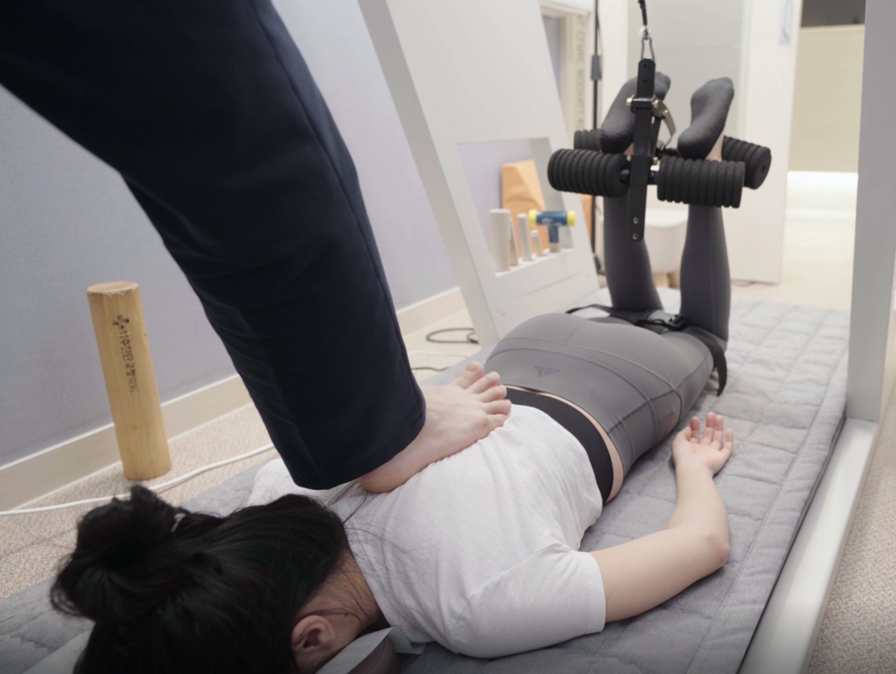

BODY-ALL WIKI
BODY-ALL WIKI
수원 추나 및 척추병원 선택 가이드:
공간척추정형술(SART)로 구조적 회복을 지향하다

"반복되는 통증의 마침표, 바디올이 제안하는 새로운 관점"
수원 허리디스크 병원이나 수원 목디스크 병원을 찾고 계신가요?
치료 후에도 통증이 재발한다면 문제는 '공간'에 있습니다.
뼈 하나하나를 세밀하게 살피는 바디올의 SART를 확인해 보세요.
A. 핵심은 '신경이 지나가는 통로의 물리적 확보'에 있습니다.
단순한 근육 이완은 일시적일 수 있습니다. 바디올의 SART는 골반부터 시작해
척추 분절 하나하나의 좁아진 공간을 세밀하게 확보하여,
눌려 있던 신경 압박을 해소하고 구조적 원인에 따른 근본적인 회복을 지향합니다.
1. 공간척추정형술의 핵심 원리
만성적인 허리통증과 목통증의 주된 원인은 중력과 잘못된 자세로 인해 척추 마디 사이가 좁아지는 것에 있습니다.
-
전신 구조의 재정렬:
주춧돌인 골반의 수평과 회전 변위를 세밀하게 조정하여 상부 척추가 바로 설 수 있는 토대를 마련합니다. -
분절별 공간 확보:
특수 교정 도구와 정교한 수기 술기를 통해 압박받는 척추 마디 사이를 물리적으로 견인하여 공간을 확보합니다. -
신경 압박의 해소:
확보된 공간을 통해 디스크의 압력을 낮추고 신경의 흐름을 정상화하여 저림과 통증의 완화를 돕습니다.
2. 바디올 교정 엘리트 팀의 수련 시스템
바디올의 SART 치료는 특정 의료진 한 명의 감에 의존하지 않고, 상향 평준화된 의료 서비스를 제공합니다.
의료진을 가르치는 교육이사의 직접 수련
척추진단교정학회 이사 및 교육위원인 이동해 대표원장이 매일 모든 의료진을 직접 교육합니다.
바디올의 모든 원장은 동일 학회 소속의 교정 엘리트 팀으로, 4만 례의 임상 데이터를 공유하며 세밀한 뼈 하나하나의 교정 술기를 완벽히 숙지하고 있습니다.
3. 증상별 세밀한 해결책
| 진료 과목 | 치료 지향점 | 관련 키워드 |
|---|---|---|
| 허리디스크/협착증 | 요추 공간 확보 및 신경 압박 해소 | 수원 허리통증 |
| 목디스크/거북목 | 경추 커브 회복 및 팔저림 완화 | 수원 목통증 |
| 골반 비대칭/휜다리 | 전신 밸런스의 기틀이 되는 하부 정렬 | 수원 추나요법 |
| 만성 난치성 통증 | 도침 유착 박리와 공간 교정 병행 | 수원 척추병원 |
4. 365일 야간·휴일 진료 안내
척추 교정은 치료의 연속성이 무엇보다 중요합니다. 바쁜 현대인을 위해 내원 편의를 극대화했습니다.
- 평일 야간진료: 월~금 매일 밤 8시 30분까지 진료합니다.
- 주말 및 공휴일: 토·일·공휴일 오후 4시까지 쉬지 않고 진료합니다.
- 편리한 주차: 건물 1층 전용 주차장에서 치료 시간 전액 무료 주차를 지원합니다.